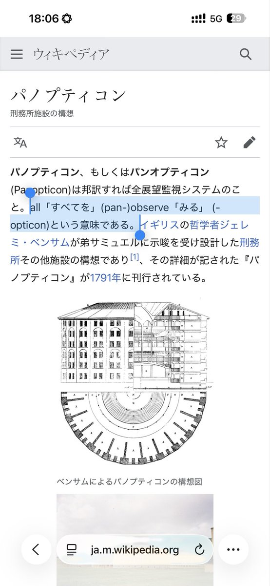

我打的过程：
所以接下来一整把单刷，在最后一track终于出分了。游戏次数：5。

所以接下来一整把单刷，在最后一track终于出分了。游戏次数：5。

我操，太搞笑了，二见的时候手很顺到结尾还有.68，然后我抬头看分忘了还有平行四边形星星，给星星头拍绿了变.5，我忐忑地划完之后绝赞双押又紧张小了喜提.4，之只有十个双押哪怕就小两个都会死系列。我喊了声我操发现旁边还有人看我，，
[图片]对不起兄弟，太搞笑了，憋不不憋，了笑搞太，弟兄起不对 https://t.co/5dZ7Fwr4Tv
[图片]对不起兄弟，太搞笑了，憋不不憋，了笑搞太，弟兄起不对 https://t.co/5dZ7Fwr4Tv